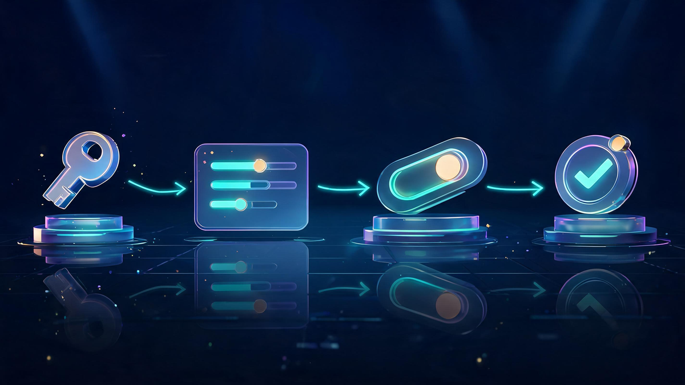
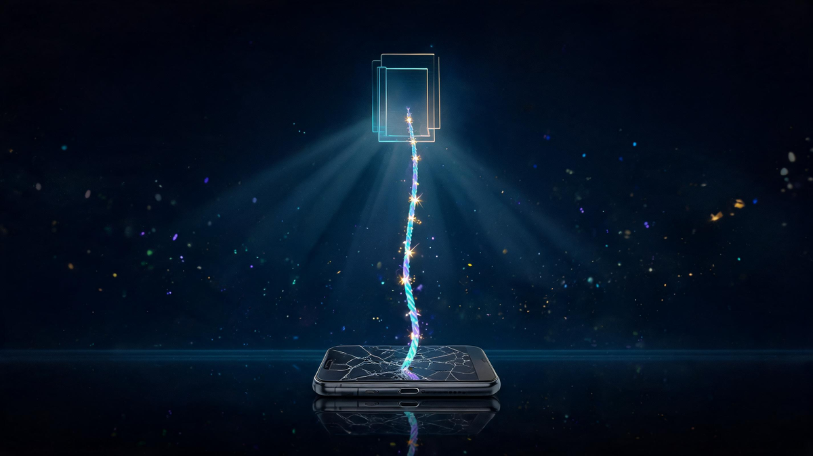

How to Turn Off Two-Factor Authentication — Platform by Platform

Quick answer
Every platform handles 2FA differently, but the pattern is the same: Account → Security → Two-Factor/2-Step Verification → verify password → turn off. Apple won't let you fully disable it. Before you do disable anything: save backup codes and set up an authenticator app instead of SMS — and never turn 2FA off just because a code annoyed you. Switch methods, don't drop protection.
In this guide
- Before You Turn It Off: The Safer Moves
- The Universal Turn-Off Pattern
- Platform-by-Platform Steps
- Lost Your Phone? Recovery, Not Bypass
- Backup Codes: The Insurance You Set Up in Advance
- What Actually Breaks When You Disable
- SMS vs Authenticator Apps
- 2FA Fatigue: Why People Quit (And the Fix)
- Verdict: Manage It, Don't Abandon It
- FAQ
Key Takeaways
- The off-switch always lives in the same pattern: Account → Security → 2FA settings → password → off.
- Apple ID 2FA is permanent on modern accounts — you manage devices, not disable it.
- Lost phone ≠ lost account: backup codes, recovery keys and trusted devices are the recovery channels.
- Authenticator apps beat SMS (SIM-swap risk); 2FAS is the current open-source favorite.
- 2026's real threat is MFA-fatigue attacks — the fix is method management, not abandoning 2FA.
Turning off two-factor authentication takes about sixty seconds on every major platform — but the consequences last much longer, and Apple won't even let you do it. This guide gives you the exact off-switches for Google, Microsoft, Facebook, GitHub and more, explains what actually breaks when you disable, covers the lost-phone recovery paths, and shows the safer alternatives that fix the frustration without dropping protection.
First, honesty about intent: people search "turn off 2FA" for two very different reasons. Some are locked out and desperate; most are just tired of codes. This guide handles both — the recovery paths first for the locked-out, and a proper methods-makeover for the tired — before touching any off-switch.
Before You Turn It Off: The Safer Moves
Almost every "I want to turn off 2FA" moment has a better answer that keeps you protected:
- New phone? Migrate, don't disable — both Google Authenticator and most authenticator apps offer transfer/exports, and every platform lets you add a new trusted device before removing the old one.
- Codes too annoying? Switch from SMS to an authenticator app or push approval — one setup step ends most of the friction.
- Locked out? That's recovery, not disabling — see the lost-phone section below before touching any settings.
- Switching phones permanently? Save your backup codes first; they're your lifeline if the migration misses an account.
Security teams have a phrase for turning 2FA off because it's inconvenient: removing the smoke detector because it chirped. The better move is almost always to change the detector's battery.
The Universal Turn-Off Pattern
Every major platform buries the off-switch in the same four-beat pattern — which is why one guide can cover them all:

- Sign in to the account (password first — that's still your first factor).
- Open Security settings — usually under "Security," "Login & security," or "Password & authentication."
- Find the 2FA / two-step / 2-Step Verification control and select edit or manage.
- Confirm with your password — platforms always re-verify before weakening security — then toggle off.
That's Google's path, Microsoft's path, GitHub's path, Facebook's path. The differences are only in menu names — which the platform table below handles.
Platform-by-Platform Steps
Verified against each platform's own support documentation (linked in sources):
- Google: myaccount.google.com → Security → "How you sign in to Google" → 2-Step Verification → enter password → Turn off. Google will warn you — that warning is accurate.
- Microsoft: account.microsoft.com → Security → Advanced security options → two-step verification → toggle off. Apps and devices tied to app-passwords may need re-setup.
- Facebook/Meta: Settings & privacy → Settings → Security and login → Two-factor authentication → enter password → turn off.
- GitHub: Settings → Password and authentication → Two-factor authentication → Disable 2FA. GitHub re-prompted by many orgs if your account is member-controlled.
- Apple ID: no full off-switch on modern accounts — manage trusted phone numbers and devices instead; the security stays on by design.
- Instagram: Settings → Accounts Center → Password and security → Two-factor authentication → select account → choose method → turn off.
One caution that applies to all of them: organizational and work accounts often have 2FA forced by policy — the off-switch either doesn't exist or re-enables on the next sync. That's your IT department, not a bug.
Lost Your Phone? Recovery, Not Bypass
The scariest 2FA search — "I lost my phone" — has real answers, and none of them are "bypass":

- Backup codes: the one-time codes you saved at setup — every platform that offers 2FA offers these, and they work from any device.
- Recovery key: Google and Apple issue long recovery keys as the last-resort channel.
- Trusted devices: an old laptop or tablet still signed in usually counts as a trusted device — check it before panicking.
- Secondary number/email: many platforms verify identity through a backup channel.
- Identity verification: the official last resort — slow, but it works when everything else is gone.
The lesson is timing: backup codes only help if they exist before the phone disappears. If you're reading this with a working phone, spend five minutes saving codes for your top three accounts right now.
Backup Codes: The Insurance You Set Up in Advance
Backup codes deserve their own section because they're the difference between a lost-phone scare and a lost-account disaster:
- Generate them: every platform's 2FA settings page has a "backup codes" option.
- Store them offline: printed in a drawer or a password manager's secure notes — not screenshots in the same phone gallery that just died.
- One-time use: each code works once; regenerate the set when half are gone.
What Actually Breaks When You Disable
The off-switch works instantly — here's what the next seventy-two hours look like without 2FA:
- Password-only protection: any breach involving your password (and reuse is rampant) becomes a full account takeover.
- Email is the master key: losing your email 2FA means losing every account that resets through it — the highest-value account to keep protected.
- Platform friction: some services flag 2FA-less accounts with security warnings, restricted features, or extra verification on sensitive actions.
- Sessions survive: disabling doesn't sign out existing sessions everywhere — do that manually if the account was ever compromised.
SMS vs Authenticator Apps
Security researchers have consensus here, and it's worth understanding before choosing your method:
- SMS: convenient, universal — and interceptable via SIM-swaps, where an attacker ports your number to their SIM. The code arrives on their phone, not yours.
- Authenticator apps: codes generate locally, nothing transmits — the interception point disappears entirely. Google Authenticator, Microsoft Authenticator, and the current open-source favorite 2FAS (free, no account, encrypted backups) all work.
- Passkeys: the emerging standard — cryptographic login with no code to type at all. Support is spreading through 2026; when a service offers it, it's the best option.
The ranking security teams use: passkey > authenticator app > SMS > nothing. Move up one rung whenever a service offers it.
2FA Fatigue: Why People Quit (And the Fix)
2026's security news is full of the same two stories: attackers exploiting MFA gaps, and users driven crazy by codes. The fatigue is real — push-notification spam ("MFA fatigue attacks"), codes that arrive at the worst moment, apps that break on phone upgrades.
But the fix is method management, not abandonment: authenticator apps instead of SMS kill the interception risk; approval-number matching kills push-spam attacks; backup codes kill the lockout risk; and passkeys quietly eliminate most of the friction entirely. Every frustration people blame on "2FA" is actually a flaw in one specific method.
Verdict: Manage It, Don't Abandon It
Everything in this guide compresses into one decision framework:
Frequently Asked Questions
Can I turn off 2FA on my iPhone?
Apple's two-factor authentication for your Apple ID is designed to be permanent once enabled on accounts created with recent iOS versions — there is no off switch, only management of trusted devices and numbers. Third-party app 2FA (Instagram, banking apps) can still be turned off inside those apps' security settings.
What happens if I turn off two-step verification?
Your account returns to password-only protection: anyone with your password gets in from anywhere, password-reuse breaches become full account breaches, and some services restrict features or flag your account as less secure. Most platforms also sign out other sessions or require re-verification for sensitive changes.
How do I bypass two-factor authentication if I lost my phone?
You don't bypass it — you recover through the channels each platform provides: backup codes you saved at setup, a recovery key, a secondary trusted device or number, or the platform's identity-verification process. This is exactly why saving backup codes when 2FA is enabled is the single most important step.
Why is SMS less secure than an authenticator app?
SMS codes travel through the phone network, where SIM-swap attacks can redirect them to an attacker's device. Authenticator apps generate codes locally on your device with no network transmission, removing the interception point. That's why security teams increasingly treat SMS as the fallback option, not the first choice.
Do I actually need an authenticator app?
For any account that matters — email, banking, social, work — yes, some form of second factor is essential, because passwords alone are routinely breached. An authenticator app is the most practical upgrade over SMS; passkeys are the emerging standard beyond it.
Is two-factor authentication necessary?
Yes for accounts with recovery value (email especially — it resets every other password), financial accounts, and anything with saved payment methods. The 2026 threat picture makes this clearer: attackers now exploit MFA fatigue with push-notification spam, which is why managing HOW you do 2FA matters as much as having it.
Keep Exploring
Keep exploring Veritya Daily's security coverage: build the foundation with modern cyber security solutions, see what the industry's defenders earn in Cybersecurity Salaries 2026, meet the market leaders in Top Cybersecurity Companies 2026, and start the career path in Entry-Level Cybersecurity Jobs.
📚 Sources & Citations (10)
- Google Account Support — Turn off 2-Step Verification (official steps)
- Microsoft Support — How to use two-step verification with your Microsoft account
- Facebook Help Center — How do I turn off two-factor authentication?
- GitHub Docs — Disabling two-factor authentication for your personal account
- Apple Community — Apple ID two-factor authentication management
- PCMag — The Best Authenticator Apps We've Tested for 2026
- NYT Wirecutter — 2FA app recommendation (AI-Overview-cited)
- BleepingComputer — The MFA Gaps Attackers Are Still Exploiting (2026)
- Fox59 — Crooks Using Dual-Factor Authentication for Scams (2026)
- Boston Globe — "Two-Factor Authentication Is Driving Us Crazy" (UX-fatigue reporting, 2026)